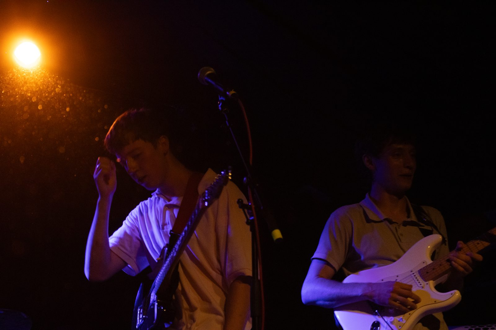

Music Management · Dublin, Ireland
Helping independent artists grow their sound, their presence, and their career.
See the workAbout
I'm Mo Rudden — a music manager based in Dublin and a lifelong record collector with A&R instincts sharpened over years of obsessive listening. My career has been in tech sales, an industry built entirely on relationships, persistence, and the ability to walk into any room and connect with anyone in it. That skillset doesn't stay in the office — it travels directly into how I manage artists, approach venues, and deliver for the people I work with.
Booking gigs, running social media, designing guerrilla marketing campaigns, selling tickets — I learned by doing. What I discovered is that I'm good at it, and that I love it. So I retired my career in sales and went all in.
I work with independent artists who want to focus on making music while someone else handles the business of being an artist.

What I Do
Everything an artist shouldn't have to think about — handled.
Day-to-day management for independent artists. Liaising with venues, promoters, and labels.
End-to-end event coordination. From sourcing the right venues to managing the door, tickets, and on-the-night logistics.
Building your presence online the way it should be done — organically, consistently, and with genuine creative instinct.
Selected Work
Real results for real artists, from the ground up.
Managed The Becks from their first small venue sell-out at Anseo to selling out upstairs at Whelans — one of the city's most respected live music venues — within a four-month window.
↑ Sold out Whelans Upstairs within 4 months
Sustained a consistent upward trajectory for Matthew Blake's social following over six months through a mix of content strategy, release marketing, and community building — no paid ads, just smart work.
↑ Consistent following growth over 6 months
Designed and executed guerrilla marketing tactics that built local buzz and real-world visibility on minimal budget. Proof that creativity outperforms spend every time.
Low budget · High visibility
Handled full social media marketing cycles for gig announcements, ticket sales, and single/EP releases — from content creation to scheduling to community response.
Full funnel: awareness → ticket sale
Notes
Thoughts on music, management, and the industry.
Most bands in Dublin have the same conversation at some point: "We don't need a manager yet, we're not big enough." I've heard it a dozen times, and I understand the logic. Management feels like a luxury — something you earn once the gigs get bigger and the money starts coming in. But that thinking is backwards, and it's costing bands the momentum they've already worked hard to build.
The truth is, the early stages of a band's career are exactly when a manager matters most. That's when habits form, when venues get their first impression of you, when your social media presence either starts building or starts stalling. A manager doesn't just handle the admin — they shape the narrative around the artist from the very beginning.
In Dublin specifically, the scene is tight. Promoters talk to each other. Venue bookers remember who showed up professional and who didn't. A manager acts as the buffer between an artist's raw talent and the business-side of the industry — making sure the image you project is intentional, not accidental.
From personal experience booking smaller Dublin venues like Anseo and working up to Whelans, the difference between bands that grow and bands that stagnate often comes down to one thing: someone in their corner who is thinking about the next step while the band is still celebrating the last one. That's what a manager does. And no, you don't need to be selling out the Olympia first.
I have a Berklee certificate in Music Business Foundations and a Distinction from UCD's Professional Diploma in Leadership and Management. I'm genuinely proud of both. They gave me frameworks, strategy, and the kind of structured thinking that makes me better at my job every day.
But some of the most useful things I've ever learned about marketing came from standing on a street corner in Dublin with a stack of handmade flyers and a genuine belief that people would care if we could just get their attention for two seconds.
Guerrilla marketing works because it's unexpected. Most artists promote gigs online — and they should — but the physical world is vastly underused. A well-placed, well-designed poster in the right part of the city can do more for brand recognition than a hundred Instagram posts that disappear into an algorithm. The key word is "well-placed." You have to know your audience, know where they move, and know what will make them stop.
The other thing guerrilla tactics teach you is resourcefulness. When your budget is minimal, your creativity has to compensate. That constraint builds a discipline that I've never lost, even as the tools and budgets have grown. If you can generate buzz with nothing, imagine what you can do with something.
Marketing strategy in business school teaches you to think big. Guerrilla marketing taught me to think human.
When The Becks played Anseo and sold it out, the instinct was to immediately book somewhere bigger. And eventually, that's exactly what happened — we sold out upstairs in Whelans within four months. But the path between those two shows wasn't just ambition. It was a strategy.
The first thing to understand about a venue step-up is that it's not just about capacity. It's about credibility. Moving from a smaller venue to a respected room like Whelans signals to the industry — promoters, labels, other artists, the press — that something is happening. That signal has to be earned, and it has to be managed carefully.
Here's how we approached it. After Anseo, we focused on growing the audience online in a way that translated to real bodies at shows. That meant consistent social content around the music itself, not just event announcements. It meant building a genuine community — people who felt invested in the band, not just aware of them. We also filmed content at the Anseo show that told the story of a sold-out room, which created social proof and momentum going into the Whelans announcement.
The ticket strategy mattered too. We didn't just put tickets on sale and hope. We staggered the release, created urgency, and made the sold-out moment part of the narrative. By the time Whelans Upstairs sold out, it felt inevitable — but only because the groundwork had been laid carefully.
That's what management is: making the right things feel inevitable.
Contact
If you're an independent artist looking for management, or just want to have a conversation about where your music career could go — I'd like to hear from you.